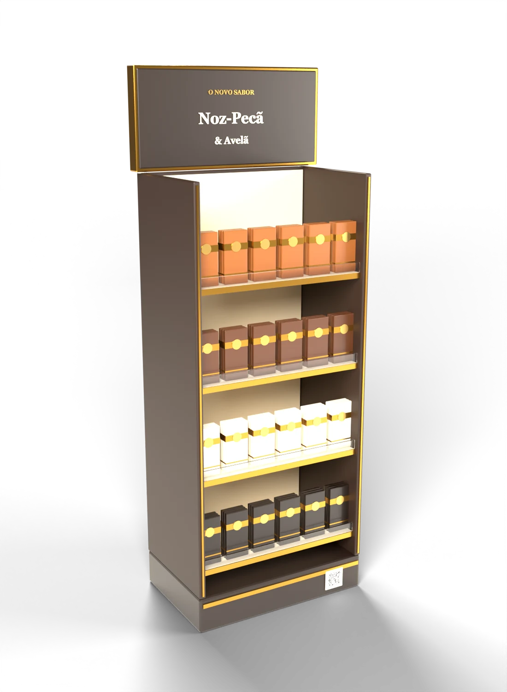
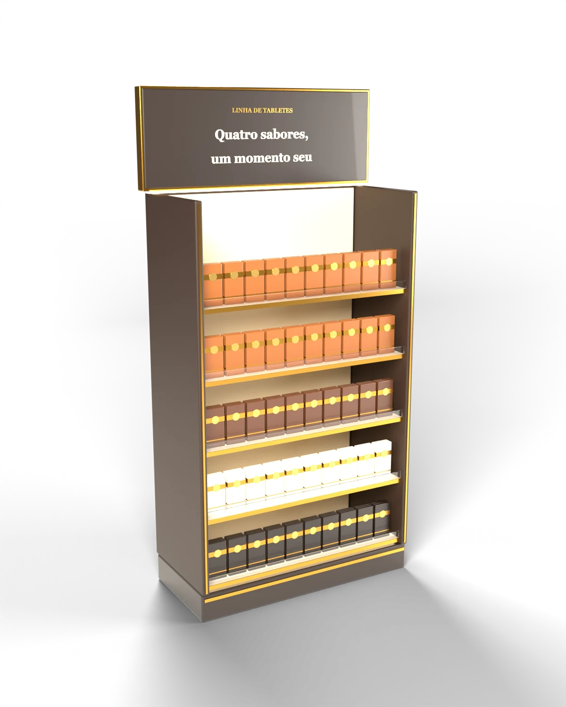
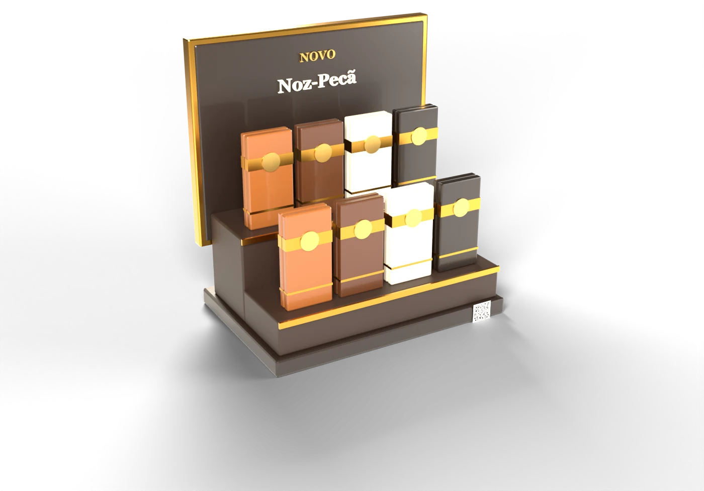
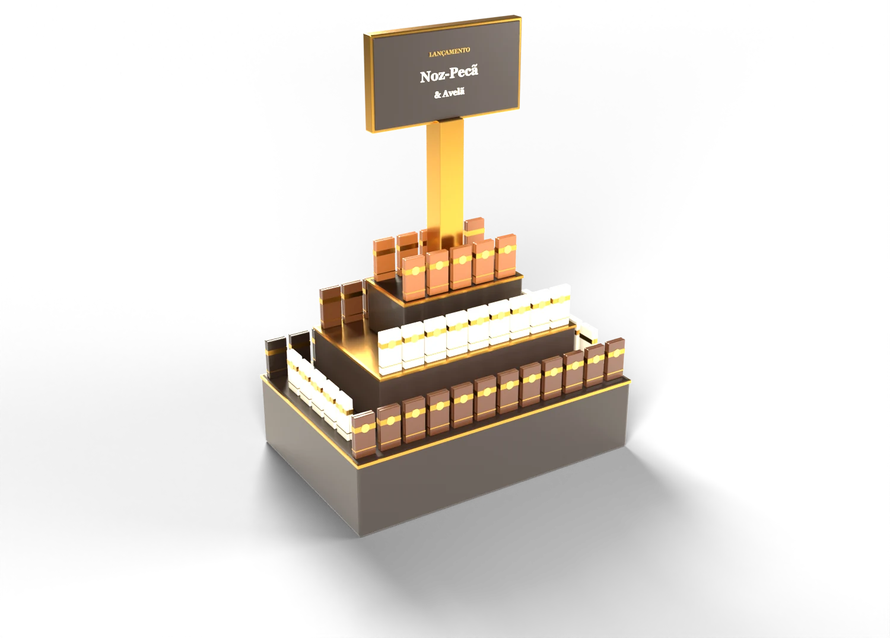

Enxoval modular, execução comprovável e dados loja a loja para os tabletes Ferrero Rocher.
Proposta proativa para Reinaldo Silva · 20 de novembro de 2026
Ilustrações 3D 75 LAB · conceito ilustrativo
Ferrero×
(00) Quem é a 75 LAB
Não somos uma agência tradicional. Somos uma aceleradora de trade.
Modelo tradicional
BriefingRetrabalhoAtrasoVerba evapora
Modelo 75 LAB
IntençãoImersãoSoluçãoExecuçãoResultado
95%projetos aprovados
−25%de custo de produção com o fornecedor certo
15000+PDVs positivados
+15anos no trade, dos dois lados do balcão
Já trabalhamos a gôndola onde a Ferrero vive
Fonte: 75lab.com.br, números da 75 LAB; carteira de clientes de 2025 e 2026.
Ferrero×
O objetivo de 2027
Cada loja entregando o momento certo, e a Ferrero sabendo disso.
≥95%de cobertura instalada, comprovada por QR em cada peça
≥90%de conformidade do material nas auditorias de campo
3níveis de investimento, do Essencial ao Inteligente
8 semde piloto controlado antes de escalar para a rede
Teoria Byron Sharp, How Brands Grow, 2010: marcas crescem com disponibilidade física e mental. O ponto de venda é onde as duas se encontram.
Metas propostas pela 75 LAB, a validar com a Ferrero. Sharp, How Brands Grow, Oxford University Press, 2010.
Ferrero×
(02) Por que agora
O formato que já pesa na categoria
35%
da categoria de chocolates no Brasil está no formato tablete
TabletesOutros formatos
Porções menores ganham espaço
Até 60 g+2%
Maiores−4,8%
Um lançamento novo num shopper mais racional.
4sabores na linha, com o Noz-Pecã & Avelã lançado em 16/11 e campanha nacional
2024
2025
−19%no volume de chocolate comprado para o lar, no 1º trimestre
2024
2025
+17%no preço médio por quilo: cada compra pesa mais no bolso
Por isso o tablete premium precisa justificar a escolha dentro da própria loja.
Fontes: Ferrero, comunicados de 29/08/2024 e 16/11/2026 (dado Nielsen de maio de 2025, participação do formato e não da marca); Worldpanel by Numerator, 1º trimestre de 2025 contra 2024; Kantar, Páscoa 2025. Dados de categoria, a atualizar com 2026.
Ferrero×
(03) Insight do consumidor
“
Quero um momento especial no meu dia, mas preciso sentir que vale o que eu pago.
Ele quer
Um pequeno prazer premium na rotina, sem precisar de ocasião especial.
Mas
Orçamento apertado, muita opção e poucos segundos na frente da gôndola.
A loja resolve
Produto visível, sabor claro, preço legível e uma razão para escolher agora.
Teoria Jobs to be done, Christensen, 2016: o shopper contrata o tablete para um trabalho, um momento seu no meio do dia. Ele concorre com todo pequeno prazer do checkout, não só com o chocolate ao lado.
Insight-hipótese da 75 LAB a partir de Worldpanel (volume e preço), Kantar (compra mais racional) e do posicionamento da linha pela Ferrero. Base: Christensen, Hall, Dillon e Duncan, Competing Against Luck, HarperBusiness, 2016.
Ferrero×
(04) Momentos de compra
Quatro momentos, quatro jeitos de expor.
01
AutorrecompensaQuero um pequeno momento especial na minha rotina.
Barreira
Preço absoluto
No PDV
Peça compacta e de alto contraste no fluxo de compra
02
Descoberta do lançamentoQuero conhecer o novo sabor sem errar a escolha.
Barreira
Combinação ainda desconhecida
No PDV
Noz-Pecã & Avelã como herói, com cada sabor bem identificado
03
CompartilharQuero levar algo gostoso para dividir com alguém.
Barreira
Comparação entre formatos
No PDV
A linha organizada em bloco, alinhada à campanha
04
Presente informalQuero demonstrar cuidado sem uma ocasião formal.
Barreira
Adequação de preço e embalagem
No PDV
Apresentação premium e comunicação sensorial sóbria
Como validar Observação em 12 a 18 lojas de canais diferentes e 20 a 30 entrevistas rápidas na saída da gôndola, como amostra exploratória.
Hipóteses de trabalho da 75 LAB (jobs to be done candidatos), a confirmar com observação em loja e com os dados da Ferrero. Fotos e entrevistas só conforme as regras de cada varejista e a LGPD.
Ferrero×
(05) O problema na loja
Entre a campanha e a compra, a loja decide.
Uma comunicação nacional forte pode chegar desigual em cada loja. Cada passo é um ponto onde o investimento escapa.
Campanha nacionalMídia forte fora da loja
Peça chega à lojaMaterial que não é instalado
Exposta do jeito certoFora do planograma ou escondida
Produto disponívelRuptura do sabor buscado
CompraEscolha vai para o concorrente
01Valor percebidoO premium precisa de motivo claro para entrar na compra do dia.
02Execução desigualA mesma campanha, entregue de formas diferentes em cada rede.
03Investimento sem rastroMaterial instalado, trocado ou retirado sem evidência padrão.
04Canais diferentesHiper, atacarejo e conveniência pedem peças diferentes.
Leitura da 75 LAB sobre a execução de lançamentos no varejo. Hipóteses operacionais, sem dados da Ferrero: a validar com as áreas de Trade, Vendas e Operações. A faixa é ilustrativa, não uma medição.
Ferrero×
(06) A ideia
A plataforma
Experiência em camadas.
Uma identidade visual, uma base física e três níveis de investimento. Muda o investimento, nunca a marca.
Presença modularA mesma família em cada canal
Experiência relevanteO lançamento como herói
Execução comprovávelCada peça com identidade
Nível 3InteligenteID por ativo, QR de instalação, WebAR e sensores seletivos
Nível 2PremiumDisplay de chão modular, ponta de gôndola e luz onde fizer sentido
Nível 1EssencialRégua, stopper, wobbler e balcão, sem eletrônica
Rota B+ da 75 LAB: estética e engenharia modular da rota de diferenciação, cobertura econômica da rota de eficiência e infraestrutura pronta para a rota de inovação. Tecnologia entra onde resolve um problema claro.
Ferrero×
(07) O enxoval
Um enxoval, a mesma base.
Toque nas abas

Nível Premium · Cluster B
Display de chão modular
A linha completa em quatro prateleiras, com o novo sabor no topo e frontão removível para trocar a campanha.
Canal
Super e hipermercado, atacarejo
Construção
Base comum, prateleiras intercambiáveis, acrílico frontal
Materiais
MDF ou metal na estrutura, PS na comunicação
KPI
Custo por loja, execução e disponibilidade

Nível Premium · Cluster A
Ponta de gôndola premium
A presença da linha no fluxo principal da categoria, com faixa de luz fria opcional sob cada prateleira.
Canal
Hipermercado e supermercado premium
Construção
Estrutura adaptável à medida de cada rede
Condição
Sempre com aprovação da rede
KPI
Conformidade de área e sell-out contra controle

Nível Essencial · Todos os clusters
Display de balcão
Compra por impulso no checkout e na conveniência, com os quatro sabores em dois degraus e o lançamento no alto.
Canal
Conveniência, proximidade e checkout
Construção
Compacta, estável e de reposição fácil
Materiais
Papelão reforçado ou PS estrutural
KPI
Abastecimento e venda na loja elegível

Nível Premium · Cluster A
Ilha promocional seletiva
Alto impacto para o lançamento nas lojas de maior potencial, em módulos desmontáveis com acesso de reposição.
Canal
Hipermercado e atacarejo de alto fluxo
Construção
Três níveis, teste de estabilidade, proteção lateral
Cuidado
Longe de calor e luz direta
KPI
Custo total e impacto comercial contra controle
Régua de gôndolaLocaliza a linha e identifica cada sabor
StopperInterrompe o fluxo no corredor da categoria
WobblerDestaca o lançamento sem cobrir o preço
TesteiraLeva a campanha para o alto da gôndola
Bandeja organizadoraBloco limpo dos quatro sabores
Kit digitalID único do ativo e QR de instalação
Ilustrações 3D modeladas pela 75 LAB para esta proposta. Conceito ilustrativo, sujeito a aprovação técnica e de marca; nenhuma gramatura ou medida comercial foi presumida. Embalagens genéricas, sem arte oficial.
Ferrero×
(08) Modularidade
Monta, troca e reaproveita.
Animação 75 LAB · montagem do display de chão
Compartilhado por toda a família
04Kit de identificação do ativo
03Pontos de fixação da comunicação
02Suportes de produto
01Base e fixadores
Troca rápidaCampanha, sabor e canal mudam por peças gráficas, a estrutura fica.
Engenharia de valorProtótipos comparados por custo, volume no caminhão, montagem e reparo.
Animação e modelos 3D da 75 LAB. Materiais candidatos: papelão microondulado no temporário; PS e PET em peças leves; MDF, metal ou ACM nas estruturas reutilizáveis. Especificação final com cálculo de carga, estabilidade e teste de campo.
Ferrero×
(09) Clusterização
Investimento na medida de cada loja.
Passo 1 · Potencial da loja
Sell-out atual e potencial30%
Sortimento da linha20%
Espaço disponível20%
Maturidade operacional15%
Custo de implantação15%
AEstratégicoBDesenvolvimentoCCapilaridade
Corte por quartis ou tercis, calibrado com o custo por loja e o sell-out da categoria.
Pesos propostos pela 75 LAB, revisados com os dados de distribuição da Ferrero. Implantação sempre sujeita à autorização da rede, à distribuição real dos SKUs e à política comercial da Ferrero.
Ferrero×
(10) Códice · rastreio de ativos
Cada display com identidade e histórico.
ID únicoPeça ligada a modelo, lote, campanha e loja
InstalaçãoLeitura do QR pelo instalador ou promotor
EvidênciaFoto e checklist de conformidade
RegistroData, local e responsável, com acesso autenticado
PainelCobertura e conformidade por rede, loja e cluster
Códice · Modo campo
QR operacionalAutenticado, para quem executa
QR do shopperConteúdo público, sem cadastro
SensoresSó onde o teste técnico validar
Tela real da plataforma Códice, da 75 LAB, em ambiente de demonstração. Métricas contínuas dependem de hardware, energia, rede e validação de campo; localização em tempo real só com ensaio específico.
Ferrero×
(11) Realidade aumentada
WebAR · sem aplicativo
Noz-Pecã & Avelã
Ver os quatro sabores
Aponte a câmera para o QR do display
Realidade aumentada sem complicar a compra.
Sem instalar aplicativoWebAR abre direto pela câmera, a partir do QR do shopper.
Sem cadastro obrigatórioA compra nunca depende de coleta de dados pessoais.
Conteúdo oficial em 3DSabores, ingredientes e o contraste de texturas, com materiais aprovados pela marca.
Medição agregadaSessões e conclusão da experiência. Interação não é tratada como venda.
Animação ilustrativa da 75 LAB. Camada opcional por cluster, testada contra uma página mobile simples; depende de protótipo aprovado, materiais oficiais e compatibilidade dos aparelhos.
Ferrero×
(12) Gestão de campo
Do display ao dashboard.
Toque nas abas
Códice · Mapa da frota
Roteiro e check-in
Rotas de visita por promotor, check-in com foto e tarefas por loja. Cada loja aparece no mapa com o status do seu material.
Lojas com problema em destaque
Prioridade por cluster
Funciona sem sinal e sincroniza depois
Códice · Modo campo
Auditoria de MPDV
O promotor identifica a peça pelo QR e segue o checklist: presença, posição, conservação e conformidade da instalação.
Instalar, remover, visitar e consertar
Foto como evidência obrigatória
Ocorrência vira ordem de serviço
Pesquisa de preço e rupturaLoja 0142 · Hiper · Cluster A · 19/11 10:42
Simulação de tela, campos vazios: os preços vêm da pesquisa em campo.
Pesquisa de preço e ruptura
Preço por unidade e por 100 g, promoções, concorrentes e disponibilidade de cada sabor, com data e loja.
Formulários sob medida
Ruptura vira alerta para Vendas
Preço como variável de controle do piloto
Execução Trade 2027Piloto · semana 6 de 8 · simulação
Cobertura instalada••%
Conformidade••%
Disponibilidade••%
Por cluster
A
B
C
Painel ilustrativo: números reais só depois da linha de base do piloto.
Dashboard integrado
Execução consolidada por rede, loja, região e cluster, no mesmo painel em que a peça foi registrada.
Módulo próprio ou integrado às ferramentas da Ferrero
Exportação de dados e perfis de acesso
LGPD e políticas do cliente
Roteiro e auditoria: telas reais da plataforma Códice, da 75 LAB, em ambiente de demonstração. Pesquisa de preço e dashboard: simulação de tela, sem dados. Ativado por etapas, com demonstração dos fluxos já disponíveis.
Ferrero×
(13) Como medimos
Indicadores com definição auditável.
Toque nas abas
Cobertura instaladalojas com instalação válida ÷ lojas planejadas≥ 95%, a aprovar
Conformidade do MPDVauditorias aprovadas ÷ auditorias válidas≥ 90%, por tipo de peça
Integridade do ativopeças em boas condições ÷ peças verificadasConforme a vida útil
Custo por loja ativadacusto incremental ÷ lojas com evidência válidaPor ciclo
Disponibilidade do SKUobservações com produto ÷ observações válidasMenos ruptura que o controle
Preço observadopreço por unidade e por 100 g, com data, loja e promoçãoVariável de controle
Interação digitalsessões válidas no QR do shopper e conclusãoNão equivale a venda
Incremento comercialsell-out do grupo teste contra o controleLeitura exploratória
ROI do programa
( margem incremental + economias comprovadas − custo do programa )÷ custo do programa
Receita incremental não é lucro: usamos margem de contribuição e só monetizamos economias operacionais comprovadas.
ConservadorSem incremento atribuível; valor operacional só se auditado.
BaseGanho medido após a linha de base, contra lojas equivalentes.
OtimistaAcima do caso-base, com preço, estoque e exposição adequados.
Indicadores e fórmulas propostos pela 75 LAB, com fonte, frequência e responsável definidos no piloto. Sem dados de venda e margem da Ferrero, não apresentamos ROI numérico: o cálculo usa as premissas aprovadas pela Ferrero.
Ferrero×
(14) Piloto
Piloto controlado antes de escalar.
Loja ativadaLoja de controle
A
B
C
Pareadas por rede, região, histórico de vendas, preço e disponibilidade do SKU.
Desenho proposto pela 75 LAB, a negociar com a Ferrero. Objetivo primário: provar implantação, conformidade e qualidade do dado; o sell-out é leitura exploratória contra o controle, e 24 lojas podem não bastar para inferência estatística robusta.
Ferrero×
De volta ao objetivo
O PDV não termina quando o display sai da fábrica.
Termina quando cada loja está pronta, cada execução é verificável e sabemos onde investir melhor. Para começar: um workshop de diagnóstico para desenhar o piloto juntos.
Caique Becker, cofundador e Head de Trade · caique.becker@75lab.com.br Daniel Coimbra, cofundador e CEO · daniel.coimbra@75lab.com.br contato@75lab.com.br · 75lab.com.br · @setecincolab · (11) 98676-5634
75 LAB Estratégia, Design e Produção Ltda · CNPJ 55.470.982/0001-77 CENU, Centro Empresarial das Nações Unidas, Torre Norte · Av. das Nações Unidas, 12.901, Brooklin, São Paulo, SP, CEP 04578-910